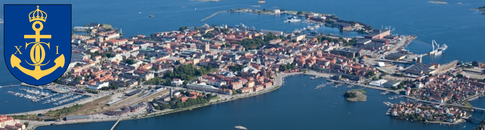
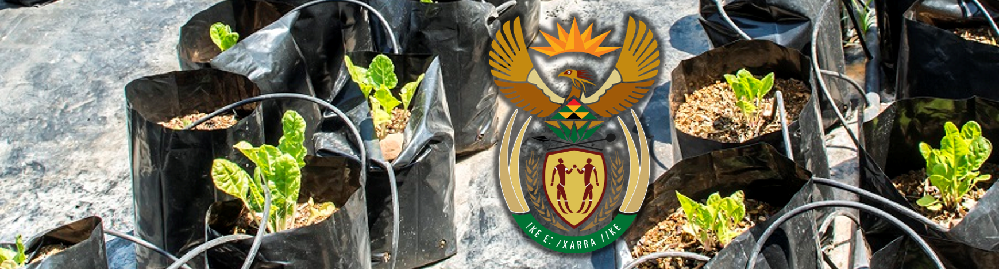
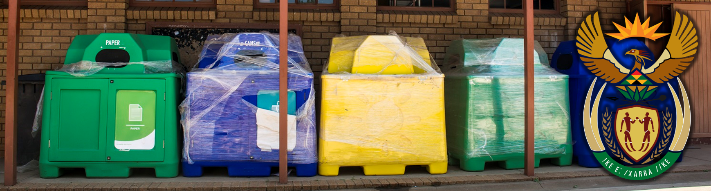

Volkswagen - 2009
MONETARY CONTRIBUTION
Bokgoni was presented with a direct monetary contribution in order to enhance infrastructure and provide educational support.
Karlskrona - 2001 to Present

ONGOING EXCHANGE PROGRAM
Learners from Bokgoni are involved in an exchange program with the Swedish municipality of Karlskrona.
SA DAFF - Ongoing

GREENING OF SCHOOLS INITIATIVE - GARDENING
The SA Department of Agriculture, Forestry & Fisheries assisted with establishing a borehole and the necessary water storage infrastructure.
SA DAFF - Ongoing

GREENING OF SCHOOLS INITIATIVE - RECYCLING
The SA Department of Agriculture, Forestry & Fisheries assisted with providing a series of recycling containers.